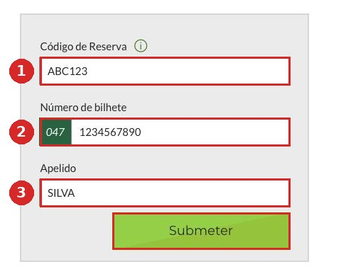
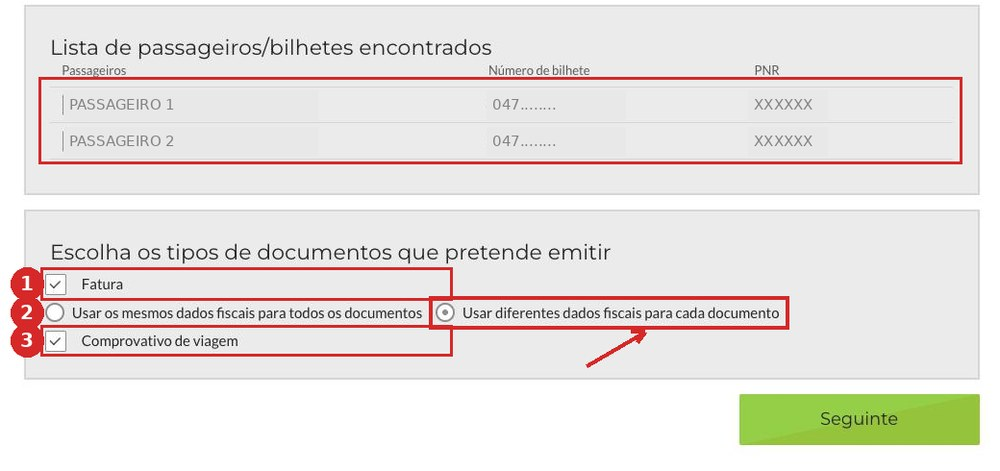
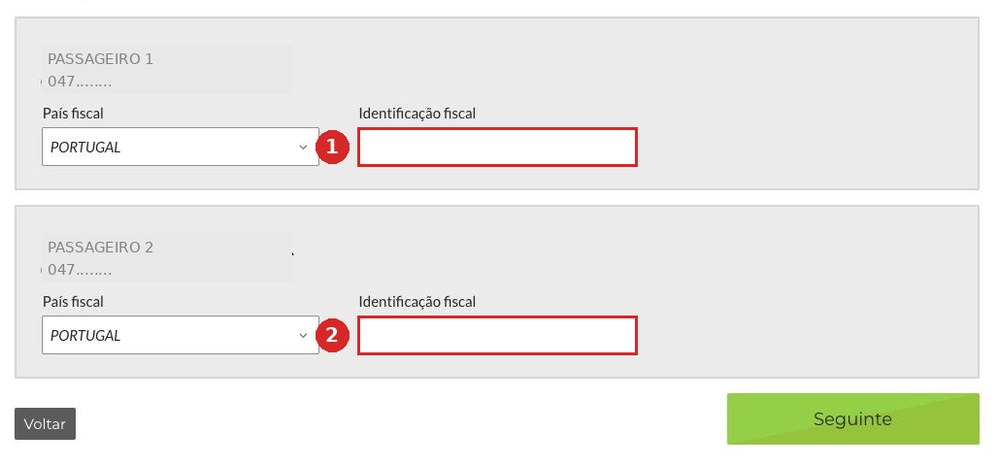
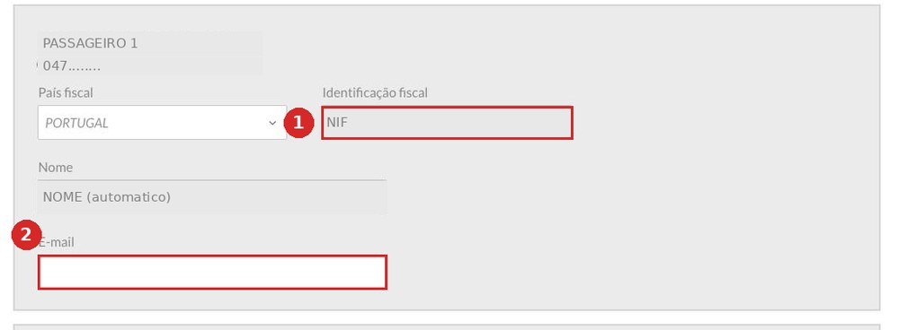
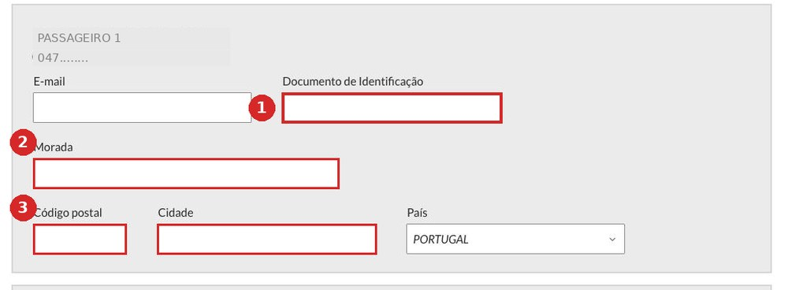
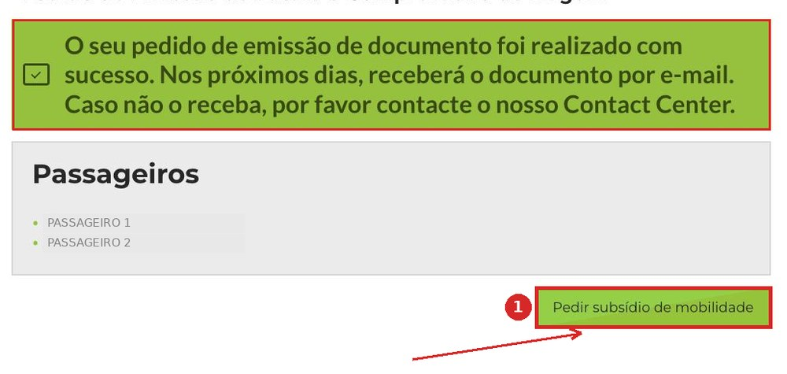
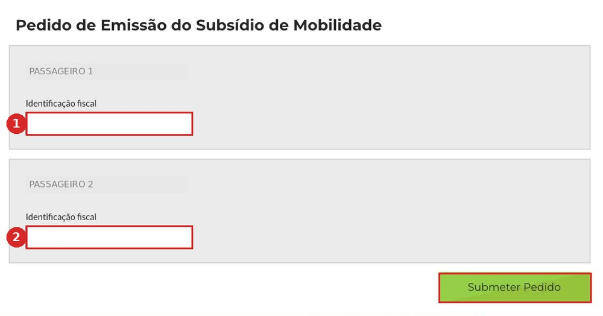
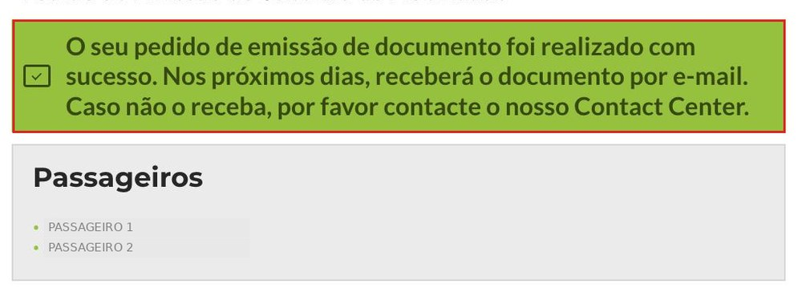

TAP · Subsídio de Mobilidade
Para pedir o subsídio de mobilidade são precisos dois documentos da companhia aérea. Pedem-se no site da TAP em cerca de quinze minutos. Não precisa de criar conta — basta o bilhete eletrónico.
Guia preparado por Igor Kartuzov · SeedWave, Madeira
Três campos do email que a TAP enviou na compra. Os dados da imagem são fictícios.
O formulário vive num site separado da TAP — receipts.flytap.com. Não pede palavra-passe nem registo. Pelo menu, o caminho é: em flytap.com abra Os meus voos → Gerir reserva → Fatura online.
receipts.flytap.com
Abre numa janela separada — no computador fica ao lado, para o guia continuar à vista.

Carregue em Submeter. Se perdeu o email do bilhete, os mesmos dois números estão impressos no fundo do cartão de embarque: PNR e E-TICKET.
A resposta Não foram encontrados resultados quer dizer que os documentos desta reserva já foram emitidos antes. Peça-os logo depois de comprar o bilhete — para viagens antigas o formulário não devolve nada.
Em cima aparecem todos os passageiros da reserva: um só pedido chega para todos. Em baixo, duas caixas: Fatura e Comprovativo de viagem. São precisas as duas e já vêm marcadas — não as desmarque.

Por omissão está escolhido Usar os mesmos dados fiscais para todos os documentos. Mude para Usar diferentes dados fiscais para cada documento.
Caso contrário, todas as faturas saem com um só NIF e vão para o mesmo endereço — e o segundo passageiro fica sem subsídio. O formulário não deixa voltar atrás para corrigir: só recomeçando do primeiro ecrã.
Agora cada passageiro tem o seu bloco. Deixe País fiscal em PORTUGAL e escreva o NIF em Identificação fiscal — cada um no seu bloco.

A TAP confirma o NIF nas Finanças e preenche o campo Nome sozinha. Fica cinzento e não se edita — é assim mesmo. Falta o E-mail: um para cada passageiro, para que cada um receba os seus documentos.

Carregue em Submeter Pedido.
O último ecrã com campos — outra vez um bloco por passageiro.

Carregue em Seguinte.
É aqui que mais gente escreve o número do título de residência — e o documento sai inútil. O comprovativo atesta que foi aquela pessoa que viajou, por isso o número tem de coincidir com o passaporte com que o bilhete foi comprado e o embarque feito.
Identificação fiscal é o NIF. Documento de Identificação é o passaporte.
A faixa verde diz que o pedido foi feito. Mas é só metade: em baixo à direita está o botão verde Pedir subsídio de mobilidade. É fácil confundi-lo com publicidade e fechar o separador. Carregue nele.

Um formulário curto: um campo Identificação fiscal por passageiro. Aqui já não pedem passaporte nem morada.

Carregue em Submeter Pedido.
Segunda faixa verde: os dois pedidos seguiram. Não há mais nada para carregar — o resto é com a TAP.

Os emails não chegam juntos nem de imediato. Foi assim num pedido real para dois passageiros: as faturas ao fim da tarde, os comprovativos cinco horas e meia depois, já na madrugada seguinte. Noutra vez o intervalo foi de uma hora, noutra de quinze — e os comprovativos vieram primeiro. Conte com tudo em mãos dentro de um dia a dia e meio.
| Hora | Anexo | O que é |
|---|---|---|
| 22.08 22:10 | AIE APXIE026_…709.pdf | fatura, passageiro 1 |
| 22.08 22:10 | AIE APXIE026_…710.pdf | fatura, passageiro 2 |
| 23.08 03:37 | BoardingProofTAP_…053.pdf | comprovativo, passageiro 1 |
| 23.08 03:37 | BoardingProofTAP_…054.pdf | comprovativo, passageiro 2 |
Todos os emails têm o mesmo assunto — «Envio de documento / Document delivery». Só se distinguem pelo nome do anexo.
A fatura: tarifa, impostos e taxas — são estes valores que o portal usa para calcular o reembolso.
Na segunda página do mesmo ficheiro está a Declaração para efeitos de Subsídio de Mobilidade. Não chega em email separado, não vale a pena procurá-la.
A prova de que a viagem se realizou: rota, datas, número do bilhete e o número do documento que escreveu no quinto ecrã.
É emitido depois do voo — por isso o pedido se faz com antecedência.
Ter os documentos é o primeiro passo. O segundo é submeter o pedido no portal do subsídio. Este guia cobre só a parte da companhia aérea, e é gratuito — reenvie-o a quem precisar.